Summit 트랙 주제「찾았다. 내 돈을 다 써버린 놈!」
한양대 신입생을 위한 3D 첫 집 찾기 서비스
팀원 김준형(프론트엔드·3D), 장시현(백엔드)
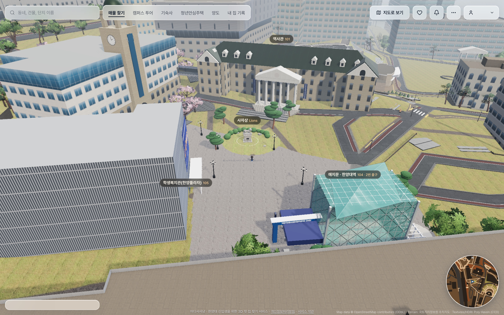
대학생 돈을 가장 많이 가져가는 건 월세입니다
가격 판결, 룸투어, 캠퍼스·동네 투어, 한양대생 후기
비싼 동네에서, 정보 없이 첫 계약을 합니다
아키텍처, ERD
네 가지 장벽에 기능 하나씩
더 정확한 판결, 더 넓은 동네와 대학가
01문제
70.9만 원
서울 10개 대학가 원룸 월세 + 관리비
다방, 2026년 7월
68.1만 원
대학생 한 달 평균 지출
대학내일20대연구소, 2025년
방 한 칸 값이 한 달 지출보다 큽니다.
한양대 주변 6개 동, 전용 15~25㎡ 월세 거래 1,315건의 환산 월세 분포
상위 10% 방을 고르면 중앙값보다 월 35.0만, 2년이면 840만 원을 더 냅니다.
출처: 다방 서울 주요 10개 대학 인근 원룸 시세(2026.7, 보증금 1천만 원·전용 33㎡ 이하, 국민일보 인용) · 대학내일20대연구소 소비지출 정기조사 2025. 두 수치는 조사 기준이 달라 크기만 견줬습니다. 자체 분석: 국토부 실거래 1,315건(2025.11~2026.10, 행당·사근·도선·하왕십리·상왕십리·홍익동), 환산 월세 = 월세 + 보증금 × 4.6% ÷ 12.
02왜 한양대 신입생인가
+31%한양대 앞 원룸 월세, 3년 사이 49.0만 원에서 64.2만 원으로 올랐습니다. 2026년 상승률은 10곳 중 두 번째입니다.
2~4위성동구는 2025년 3월부터 2026년 9월까지 서울 25개 구 가운데 늘 이 자리였습니다.
출처: 다방여지도 2026.9(국토부 실거래 연립·다세대 원룸, 전용 33㎡ 이하, 보증금 1천만 원 환산, 인사이트·아이뉴스24 인용, 서울 평균을 넘는 11개 구만 공개) · 다방 서울 주요 10개 대학 인근 원룸 시세 2026.1(세계일보 2026.2.24 인용) · 2023.1 아시아경제 인용. 순위 추이: 뉴스스페이스·뉴스핌·벤처스퀘어·머니투데이 인용.
02왜 한양대 신입생인가
30.8%
나머지 69%는 서울 밖에서 옵니다. 지방 출신은 동네도 시세도 모른 채 첫 방을 구합니다.
11.2%
서울 주요 10개 대학 가운데 가장 낮습니다. 10명 중 9명은 기숙사에 들어가지 못합니다.
지방에서 보는 방
멀리서는 사진과 평수, 옵션 목록만 보고 고릅니다. 그 사진은 보정할 수 있습니다.
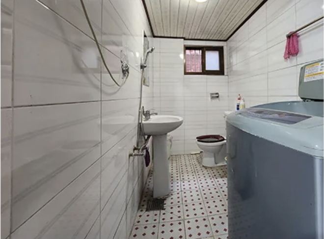
보정 전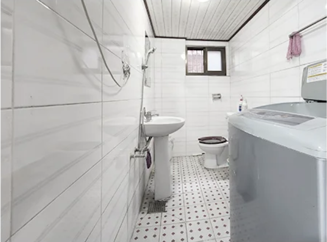
보정 후→
서울에 와서 보는 방
허위 매물,
보정이 빠진 실물
321 / 1,100건 대학가 원룸 온라인 광고 가운데 위법 의심. 면적 부풀리기, 없는 옵션 표시, 근저당 숨김이 많았고 점검 지역에 사근동이 들어 있었습니다.
지방 출신 신입생"이 방이 비싼 건지 싼 건지 모르겠어요."
멀리 사는 부모님"사진 말고 실제로 어떤 방인지 보고 싶어요."
출처: 종로학원의 대학알리미 분석, 2026학년도(파이낸셜뉴스 2026.11.8) · 대학알리미 2024 기준(한국경제 2025.3.12) · 국토교통부 대학가 온라인 부동산 광고 점검 2025.7~8(헤럴드경제 2025.10.9). 서울 밖 출신에는 경기·인천도 들어갑니다. 국토부 점검은 특정 앱이 아니라 대학가 온라인 광고 전체가 대상입니다. 다방·직방 로고는 각 회사의 상표입니다. 보정 전후 사진은 크몽의 매물 사진 리터칭 서비스 페이지 캡처입니다. 아래 두 문장은 가상 페르소나입니다.
03해결 방안
한양대 신입생은 서울에서 손꼽히게 비싼 동네에서, 시세도 방 안도 동네도 모른 채 2월에 첫 계약을 합니다.
| 장벽 | 어디서사냥 기능 | 무엇이 달라지나요 | |
|---|---|---|---|
| 시세를 모릅니다같은 크기 방이 2배 넘게 차이 나도 견줄 기준이 없습니다. | → | 가격 판결 + AI 적정가 | 같은 동네 실거래와 비교해 월·2년 초과액과 등급을 바로 보여 줍니다. |
| 방 안을 못 봅니다광고 사진은 고를 수 있고 지방에서는 가 보기 어렵습니다. | → | 룸투어 | 평면도로 만든 실내 3D를 계약 전에 직접 걸어 봅니다. |
| 동네를 모릅니다과 건물까지 몇 분인지, 밤길이 어떤지 알 수 없습니다. | → | 캠퍼스 투어 · 동네 투어 | 캠퍼스와 집 주변 700m를 걸어 보고 과 건물까지 도보 시간을 확인합니다. |
| 믿을 말이 없습니다들을 수 있는 건 중개인과 집주인의 말뿐입니다. | → | 한양대생 후기 | 한양대 계정으로만 쓰는 후기로 방음, 채광, 보증금 반환까지 확인합니다. |
03해결 방안
어디서사냥
3D 한양대 캠퍼스에서 집을 고르고 들어가 보고 시세와 견줘 보는 서비스입니다.
판정 보류: 비교할 거래가 모자라면 등급을 매기지 않습니다.
기준: 기능 명세서의 가격 판결 카드. 등급 이름과 색은 앱 화면 그대로입니다.
04핵심 기능 01
비싼 방을 고른 줄도 모르고 내던 돈을, 계약 전에 숫자로 확인합니다.
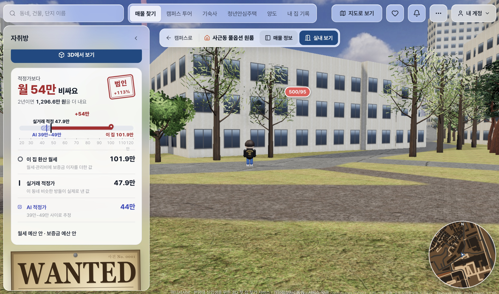
2월·2년 초과액과 등급 도장 3이 집 · 실거래 · AI 범위 43D 말풍선 500/9504핵심 기능 01
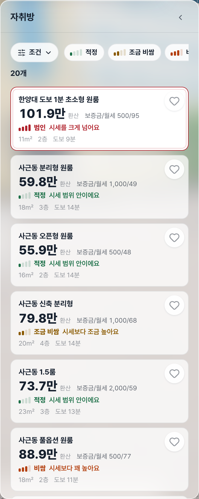
매물 목록 카드마다 등급과 환산 월세
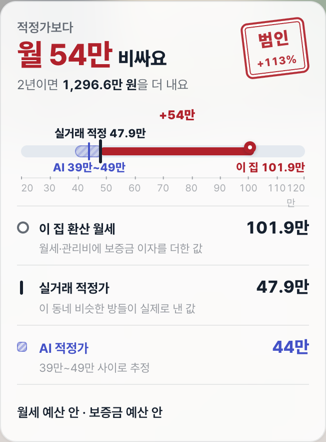
판결 카드 이 집과 두 적정가를 한 눈금에
국토부 실거래에서 같은 동, 면적 ±30%, 최근 12개월 거래를 골라 ㎡당 중앙값을 냅니다. 거래가 10건이 안 되면 이웃 동까지 넓히고, 그래도 모자라면 판정을 보류합니다.
실거래와 동 단위 정보(사자상·지하철·버스까지 거리)로 학습한 GBM 분위 회귀가 적정 월세와 25~75% 범위를 냅니다.
두 기준이 같은 쪽을 가리키면 더 믿고 판단할 수 있습니다.
API GET /listings/{id}/price-check, AI POST /v1/rent/estimate. 화면의 금액은 서비스에 등록된 예시 매물입니다.
04핵심 기능 02
사진으로는 숨길 수 있는 방 안을, 계약 전에 직접 걸어 봅니다.
04핵심 기능 02
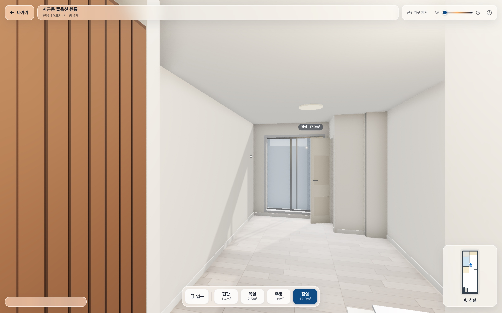
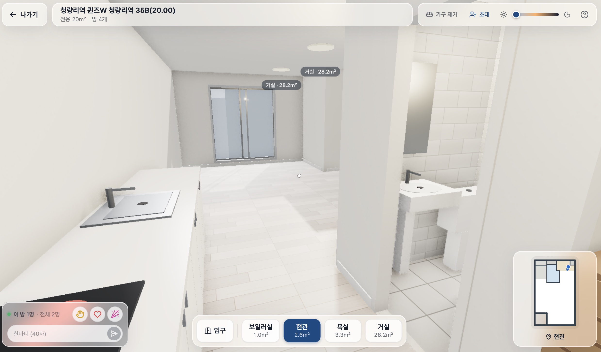
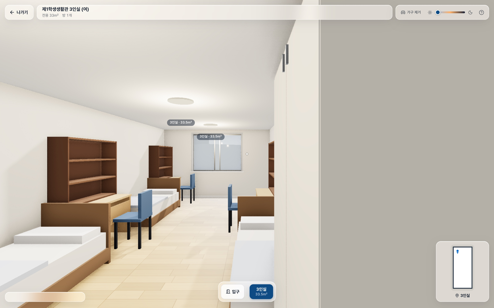
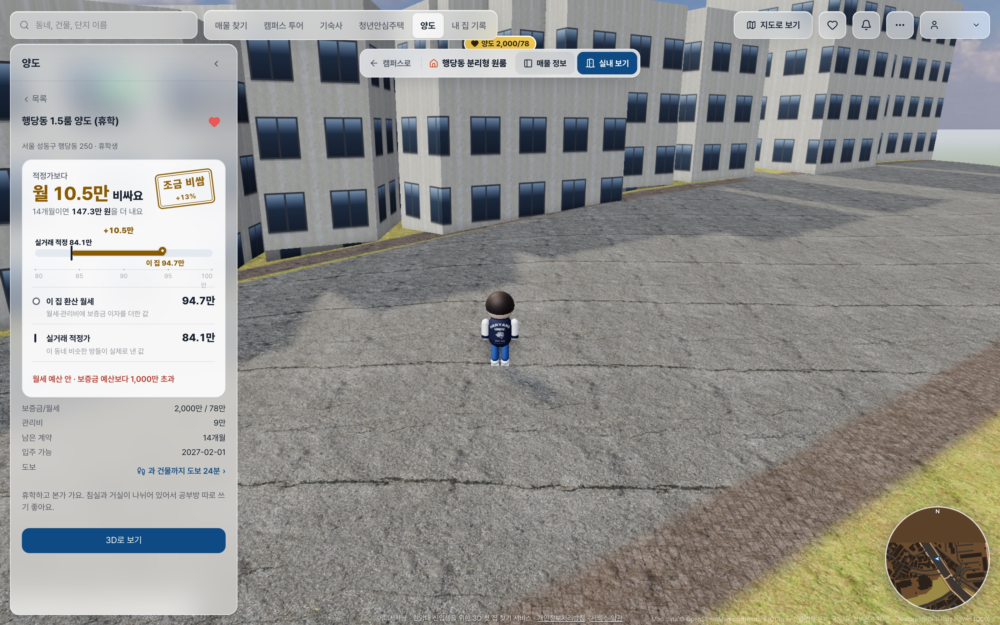
양도 글은 아직 평면도를 받지 않아 실내 대신 판결 카드와 3D 위치로 확인합니다.
04핵심 기능 03
서울이 처음인 신입생도 학교와 동네를 미리 익히고 방을 고릅니다.
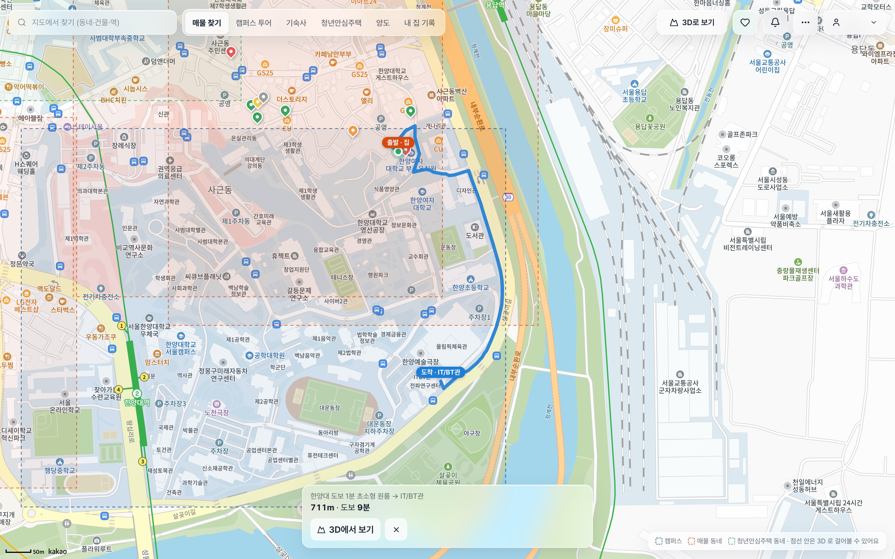
04핵심 기능 04
중개인 말 대신, 먼저 살아 본 한양대생의 경험으로 확인합니다.
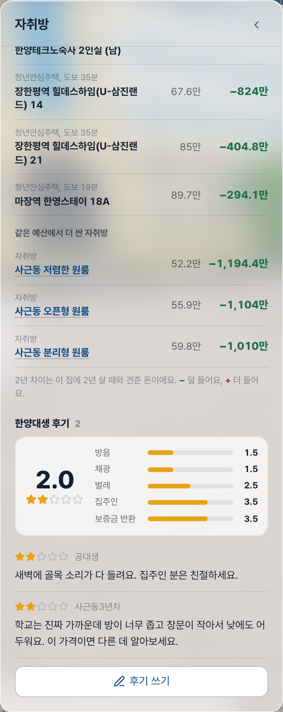
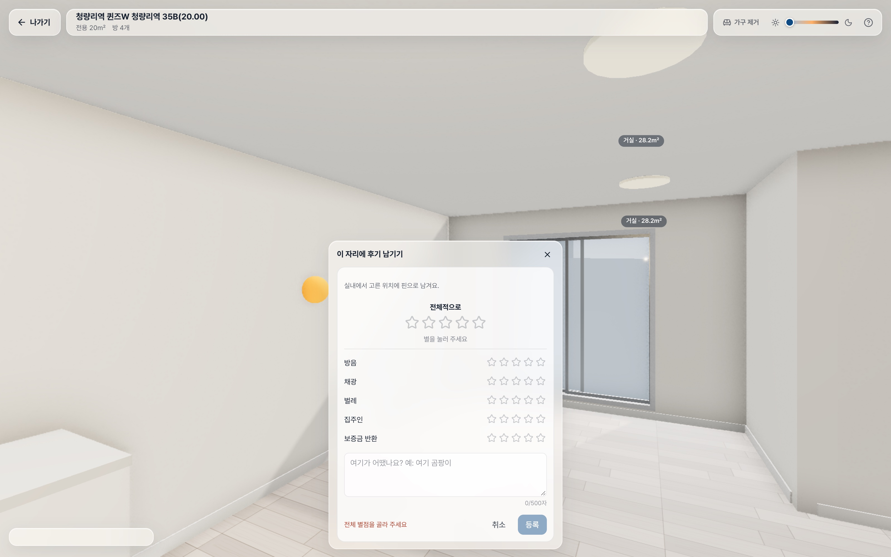
3벽을 길게 누른 자리에 핀 후기04핵심 기능
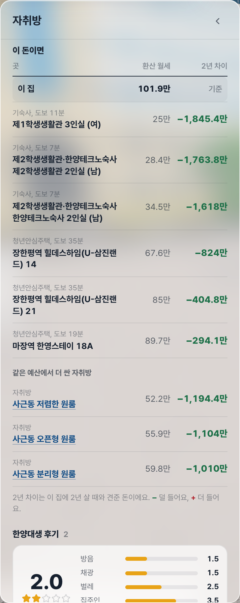
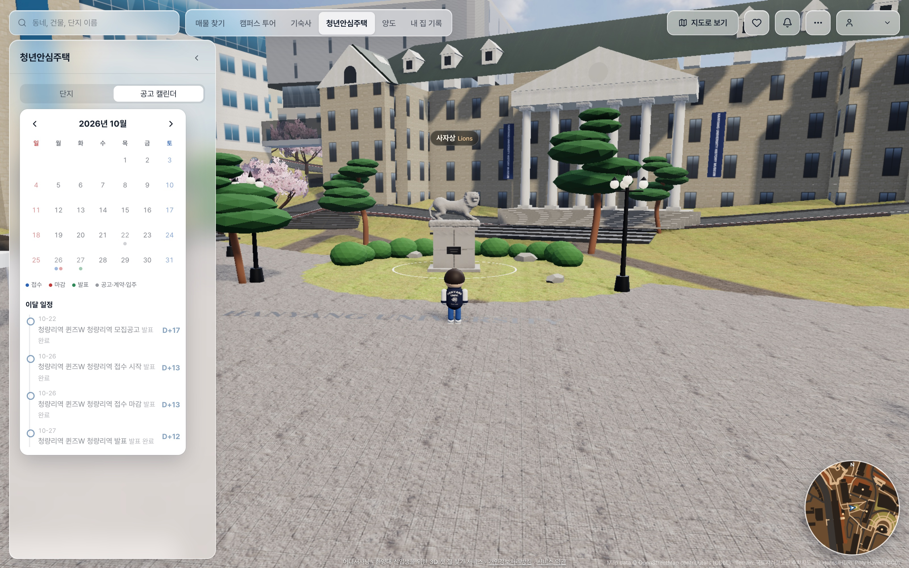
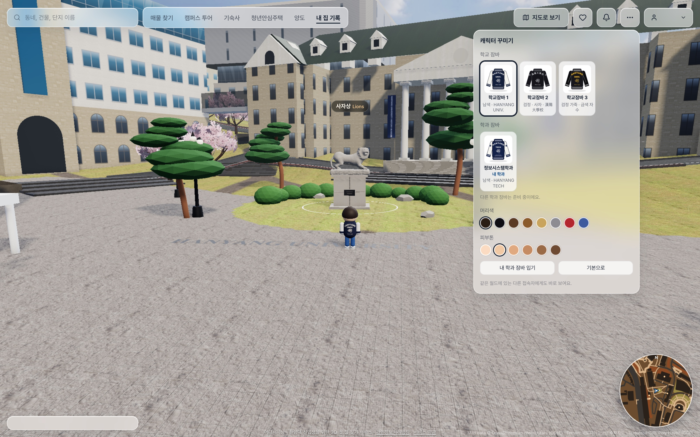
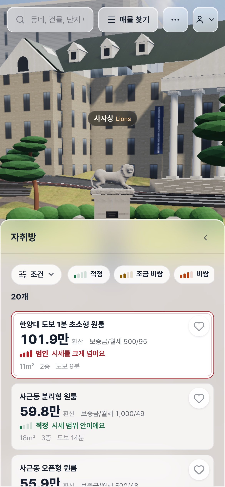
이 밖에 내 집 기록(월세·공과금, 월간 리포트, 계약 만료 알림), 찜, 통합 검색, 2D 지도가 있습니다.
시연
05기술 구조
3개 서버
Vercel 프론트, Railway 백엔드·AI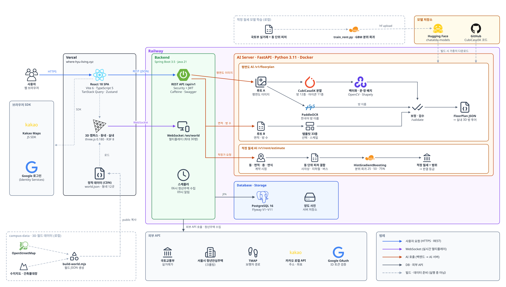
05기술 구조
29테이블
외래 키 23개, PostgreSQL 16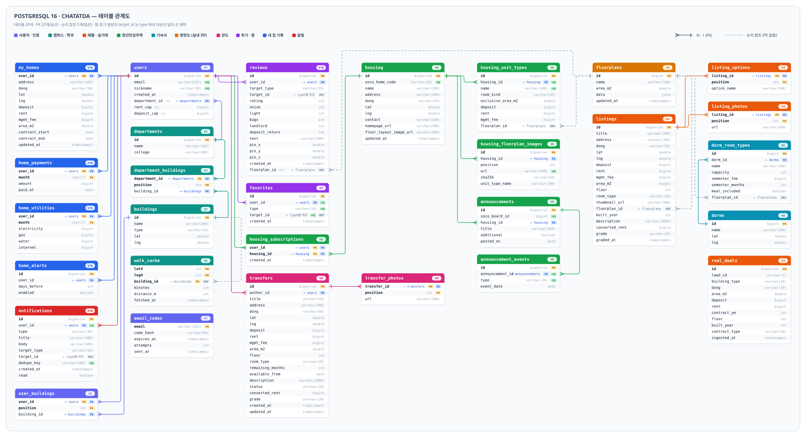
06기대 효과와 발전 방향
06기대 효과와 발전 방향
국토부 실거래 수집 구를 늘리고 대학별 3D 월드를 만듭니다.
AI 평면도 결과를 사람이 고친 기록으로 다시 학습합니다.
실제 거주 여부를 확인한 후기에 표시를 붙입니다.
등기·보증보험처럼 계약 직전에 볼 항목을 판결 옆에 둡니다.
이 장의 항목은 아직 구현 전인 개선 방향입니다.
어디서사냥
https://where-hyu-living.xyz/
Appendix
51개 기능
P0 11 · P1 26 · P2 14, 15개 분류| 분류 | 기능 | P0 | P1 | P2 | 기능 ID와 이름 (파란 칸은 핵심 기능 4개에 쓰이는 것) |
|---|---|---|---|---|---|
| 계정과 내 정보 | 2 | 1 | 1 | A1 구글 로그인 (한양대 계정)A2 내 정보 설정 · 첫 로그인 안내 | |
| 3D 월드 | 9 | 2 | 3 | 4 | B1 3D 캠퍼스 걷기B2 동네 3D 월드B3 미니맵 · 순간이동B4 시간대 조절 (낮 ~ 밤)B5 3D 말풍선 마커B6 캠퍼스 표식B7 주변 시설 표시B8 문 앞 실내 진입B9 3D 지원 지역 밖 이동 처리 |
| 검색, 지도, 길 안내 | 4 | 1 | 3 | C1 통합 검색C2 2D 지도 보기C3 과 건물까지 도보 길 안내C4 캠퍼스 투어 | |
| 매물과 가격 판결 | 5 | 3 | 1 | 1 | D1 매물 목록 · 필터D2 매물 상세 (용의자 파일)D3 가격 판결 카드D4 수배 전단D5 "이 돈이면" 비교 |
| 실내 3D | 1 | 1 | E1 실내 3D 방 투어 | ||
| 후기 | 2 | 2 | G1 매물 후기G2 실내 핀 후기 | ||
| 찜 | 2 | 2 | F1 찜하기F2 찜 목록 | ||
| 청년안심주택 | 4 | 2 | 2 | I1 단지 목록I2 단지 상세 · 주택형I3 공고 D-day 알림 구독I4 공고 캘린더 | |
| 기숙사 | 1 | 1 | P1 기숙사 목록 · 호실 비용 | ||
| 양도 | 3 | 2 | 1 | K1 양도 글 목록 · 상세K2 양도 글 쓰기K3 양도 글 수정 · 완료 처리 | |
| 내 집 기록 | 5 | 2 | 3 | H1 내 집 등록H2 월세 납부 기록H3 공과금 기록H4 월간 리포트H5 계약 만료 알림 설정 | |
| 알림 | 1 | 1 | Q1 알림함 | ||
| 멀티플레이 | 4 | 1 | 3 | M1 같이 걷기M2 이모트 · 한 줄 채팅M3 초대 링크M4 캐릭터 꾸미기 | |
| 화면과 성능 | 3 | 1 | 2 | S1 그래픽 품질 자동 조절S2 느린 기기 안내S3 반응형 상단바 | |
| AI와 데이터 | 5 | 1 | 4 | X1 AI 적정 월세X2 AI 평면도 생성X3 청년안심주택 자동 수집X4 알림 자동 생성X5 실거래 수집 · 등급 계산 |
Appendix
53개
GET 28 · POST 15 · PUT 3 · PATCH 3 · DELETE 3 · WS 1/auth/google/me/profile/me/profile/departments/buildings/search/geo/address/walk/listings/listings/{id}/listings/{id}/price-check/listings/{id}/alternatives/listings/{id}/nearby/floorplans/{id}/floorplans/estimate/reviews/reviews/me/favorites/me/favorites/me/favorites/{type}/{targetId}/housing/housing/{id}/housing/announcements/housing/{id}/subscribe/housing/{id}/subscribe/dorms/transfers/transfers/{id}/transfers/transfers/{id}/transfers/{id}/status/uploads/me/home/me/home/me/payments/me/payments/me/utilities/me/utilities/me/report/me/home/alerts/me/home/alerts/me/home/alerts/{id}/me/home/alerts/{id}/me/notifications/me/notifications/{id}/read/invites/ws/world/health/v1/floorplan/estimate/v1/floorplan/estimate-from-meta/v1/floorplan/validate/v1/rent/estimate/healthAppendix
캐시에 없는 도보 시간 요청 14개가 동시에 들어오자 DB 연결이 바닥났습니다. 읽기 트랜잭션이 연결을 쥔 채 TMAP 응답(최대 3초)을 기다렸고, 캐시 저장이 연결을 하나 더 빌리면서 서로 막혔습니다. 그동안 다른 API도 모두 멈췄습니다.
목록 조회와 도보 계산을 나눠 연결을 먼저 돌려주고, 캐시 저장은 별도 스레드로 옮겼습니다. 같은 자리·같은 건물 요청은 TMAP을 한 번만 부르도록 합쳤습니다.
30.3초
전: 4개 500 오류, 다른 API도 멈춤→
1.8초
후: 15개 모두 200, 다른 API 10~24ms606KB
첫 화면을 막는 CSS→
134KB
gzip 196KB → 30KB출처: docs/harness/final-review-2026-11.md (P0 #1, 5장 전후 수치). 회귀 테스트 FinalQaFixesTest.sameWalkKey_atOnce_callsTmapOnce.
Appendix